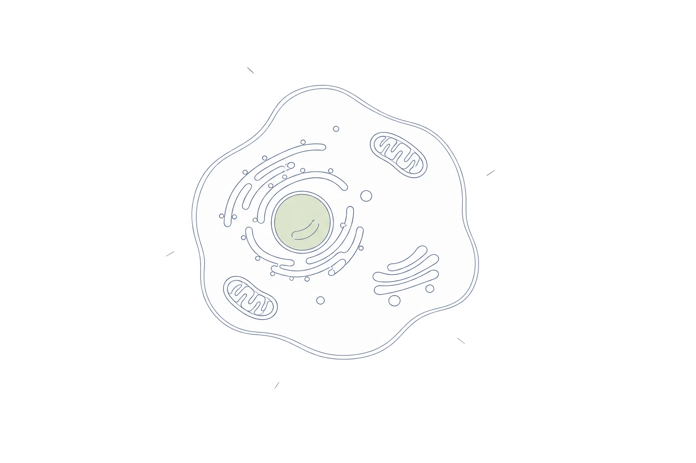

A patient story. A research question.
A small change.
A very human question.
When someone notices a change on their skin, they want to know what it means. Getting an answer starts with clinical care.
Follow Maya’s storyThis is a hypothetical story, not a patient testimonial or a demonstrated HelioFlux outcome.
HelioFlux is preclinical. Human cancer-detection performance has not been established.
01 / The person
Meet Maya.
Maya notices that a spot on her arm has changed. She wonders whether it needs attention.
In this fictional scenario, she contacts a healthcare professional rather than waiting for an experimental test.
A new or changing skin lesion deserves medical attention. This story is not medical advice.
02 / Care today
The next step belongs to clinical care.
A clinician evaluates the spot and decides what investigation or follow-up is appropriate. A skin biopsy may be needed to diagnose skin cancer.
Examination
Clinical history and examination guide the next step.
Further assessment
Biopsy or other follow-up is decided by the treating clinician.
A care plan
Any diagnosis and treatment decisions remain grounded in established clinical evidence.
HelioFlux is not a replacement for this pathway and should not delay recommended assessment or biopsy.
The research question →03 / The research question
Could light add useful information?
Biological tissue emits extremely faint light. HelioFlux is investigating whether features of that signal could help characterize cancer-related changes.

Measure
QSense
Hardware for collecting ultraweak photon emissions.
Analyze
LuminAI
Software to analyze intensity, wavelength-dependent features and temporal patterns.
Test
Build evidence
Determine whether measurements are repeatable and meaningful in an appropriate human study.
This is an investigational approach. A useful clinical result, scan duration and patient benefit still need to be established.
Read the evidence →04 / Evidence, separated
A foundation is not a finished test.
Preclinical
Cells and mice
Published research examined cell cultures and a mouse melanoma model. Those findings motivate further study; they do not establish human diagnostic performance.
Read the 2020 paperHuman research
Brain activity
The 2025 study explored optical markers of brain activity in healthy adults. It was not a human cancer-detection validation study.
Read the 2025 paperNot yet established
Cancer performance
Human sensitivity, specificity, detection threshold, comparative timing and clinical benefit are not established for HelioFlux.
No cell-count comparison here is a claim of earlier detection in patients.
What comes next →05 / What comes next
Keep the patient. Change the question.
For Maya today, the next step is appropriate clinical care.
For HelioFlux, the next step is to test the research question in a suitable human feasibility study, without replacing that care.
The first indication, site, protocol, enrollment and timing require confirmation. This story does not announce an active trial or promise Maya an outcome.
06 / Build the evidence
A clearer signal starts with a careful study.
The ambition is a non-invasive way to learn more about tissue. The work ahead is to find out whether that information can help patients and clinicians.
Sources and review notes
- Cancers (2020): cell and mouse research
- iScience (2025): optical markers of brain activity
- American Academy of Dermatology: skin cancer information
- Draft reflects the November 2026 company-context review. Study details and public wording require scientific review before publication.
Preclinical technology. Human cancer-detection performance has not been established. Not offered here as a clinical diagnostic or treatment. Maya is fictional; illustrations are not clinical data.